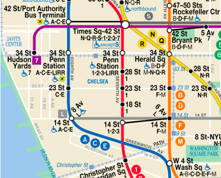

The New York City Guide to Getting Around
 There are three major Airports in the New York City area, two of which are in New York and one close by in New Jersey.
If you are coming to New York from out of the country you will most likely be flying into John F. Kennedy International Airport (JFK) which lies South of the city near Queens. For easy access after your flight to the city itself, you can take the AirTrain. The Airtrain will take travelers straight from the airport to the city and close to main subway and train lines to get you to your destination once inside Manhattan.
The second airport located in New York is the La Guardia Airport (LGA). Most domestic flights will end here rather than JFK. LGA is also located in Queens but is much closer to the city itself. There are multiple bus and subway routes that can get you to the city and of course iconic New York cabs waiting to take you to your destination.
The 3rd and final airport is located in New Jersey, Newark Liberty International Airport (EWR) is used for both international and domestic flights. With its location outside of New York it is less crowded but a little out of the way. In an effort to make EWR more accessible for tourists and travelers you can now take a NJ AirTrain into Manhattan from the airport.
There are three major Airports in the New York City area, two of which are in New York and one close by in New Jersey.
If you are coming to New York from out of the country you will most likely be flying into John F. Kennedy International Airport (JFK) which lies South of the city near Queens. For easy access after your flight to the city itself, you can take the AirTrain. The Airtrain will take travelers straight from the airport to the city and close to main subway and train lines to get you to your destination once inside Manhattan.
The second airport located in New York is the La Guardia Airport (LGA). Most domestic flights will end here rather than JFK. LGA is also located in Queens but is much closer to the city itself. There are multiple bus and subway routes that can get you to the city and of course iconic New York cabs waiting to take you to your destination.
The 3rd and final airport is located in New Jersey, Newark Liberty International Airport (EWR) is used for both international and domestic flights. With its location outside of New York it is less crowded but a little out of the way. In an effort to make EWR more accessible for tourists and travelers you can now take a NJ AirTrain into Manhattan from the airport.
New York City cabs are iconic. You often see in tv shows or movies people having a hard time catching a cab in NYC. Fortunately, it isn’t that hard in real life you just have to know what to look for. There are easy to read signs that can tell you the status of a cab. Cabs can be three things On-Duty, Occupied, and Off-Duty. You can tell the difference between these cabs by looking at the light on the top of the cab. 1. An On-Duty cab will have just the center of the light on highlighting the cabs number. 2. An Occupied cab will not have any lights on the top on. This means that someone is already in the cab and it can’t stop for you. 3. An Off-Duty cab will have all of its lights on the top on. Not only will the light highlighting the cab number be on but the lights on the sides of the topper will be on as well. ## How to Use Cabs in New York Now that you know how to tell if a cab is available you don’t have to go around chasing after taken cabs. If you don’t see any cabs in your area consider walking a block or two to a higher traffic road. Once you spot a cab stick your arm up, you can even try a whistle or two to try to get the cabbie’s attention. LOCAL TIP: If you aren’t going very far make a “C’ with your hand when hailing a cab. It will let them know that you aren’t going far and even an Off-Duty cab might pick you up. Wait till you get in the cab to give your destination, once you are inside the cab they can’t refuse the trip. When giving your destination don’t give exact addresses. Instead, give landmarks or street corners, if you do this it gives the impression that you are local and they are less likely to “take the long way” to charge you extra. Taking a cab is often not the cheapest way travel around the city. When going through tolls you are expected to pay all tolls and fees associated with your travel. You also might have to pay for surcharges depending on the time of your ride. For more exact information about fares you can check out NYC’s website. Hail a Taxis with This App Arro Arro is special because before this app existed you could not schedule a cab or request one digitally, you had to do it the old fashion way. You can request a ride and pay for it automatically once the trip ends, you can even pay for a cab that you are already in.
 The Subway is the most popular mode of transportation in New York City. There are tons of access points and stops to get you around town if you’re in a hurry. Using the subway can seem stressful but it shouldn’t be intimidating. If you aren’t sure what train to take you can look at a subway map that is on the wall in every subway station. There are two types of trains, “local” which means they stop at every stop on their route and “express” which will skip stops in order to get you to a set destination faster. If you mix these up you could end up on the other side of town so be sure to check the train before getting on. Many people will refer to the trains by the color of the line, this is a bad idea. Once you travel outside of Manhattan the trains with the same color will split up and you will end up in the wrong place. When looking for a route pay attention to the number or letter. In some places on the map you will see a little black link connecting two stations, these are underground tunnels for pedestrians to make it easier to transfer trains. This makes it faster than going up the street level and walking over to the next station you need. You will see that many of the trains with have “Uptown”, “Downtown”, or the name of a borough. When you see “Uptown” it just means that it is North from where you are currently standing. “Downtown” means that is South from where you are currently standing. The name of a borough on the train just means the last stop, if that borough is North of you then you are going North and vice versa. Within the station itself, you will see signs hanging down with the number of the trains that stop at that station and the hours that it operates. To tell which train is pulling in currently look at the sign on the front and sides of the train to see what number it is and the direction it’s traveling in. ### How to Ride the Subway in New York Once you find the correct station that you need to be at you can enter the station with a MetroCard. If you don’t have a card and need one you can purchase one from the station operators booth or a MetroCard Vending Machine. #### Turnstiles When approaching the turnstile swipe your MetroCard on the right side of the turnstile and walk through once the screen reads “Ok”. If your card does not go through try swiping the card faster. If your card is still not working then see an attendant. Do not jump over the turnstile, if you jump over you can not only hurt yourself but you can also be arrested. #### Entering the Train Once you are on the platform wait behind the yellow line for your train. When your train pulls into the station wait for the people exiting to leave first and then walk in and take a seat. If you want a better chance of finding an available seat try the first and last cars. They tend to have fewer people in them and you might be able to take a seat and rest your feet for the ride. #### Transfers Sometimes when riding the subway you might have to transfer trains or stations. At some stops, there is an underground tunnel for riders to transfer from popular stations. Using these tunnels will save you time. You get one transfer for free on your MetroCard as long as it is within 2 hours from the start of your trip. #### Knowing When to Get Off Try to have an idea of how many stops your train will have until you have to get off. When you are coming into a station the conductor will announce what station you are at however it is often hard to hear and mumbled. It’s best to keep an eye out the window when you pull in, there will be the station number on the poles inside of the station and sometimes will be tiled into the wall of the station. ### Apps to Help You Navigate the Subway Citymapper Citymapper is a great app to have not only for the subway but for any transportation in New York City. Once you put your start and end destination in Citymapper will calculate different ways to get there while giving real-time delay updates. It will even tell you how many calories you’ll burn and the cost of your fare. This app is also available as a website.